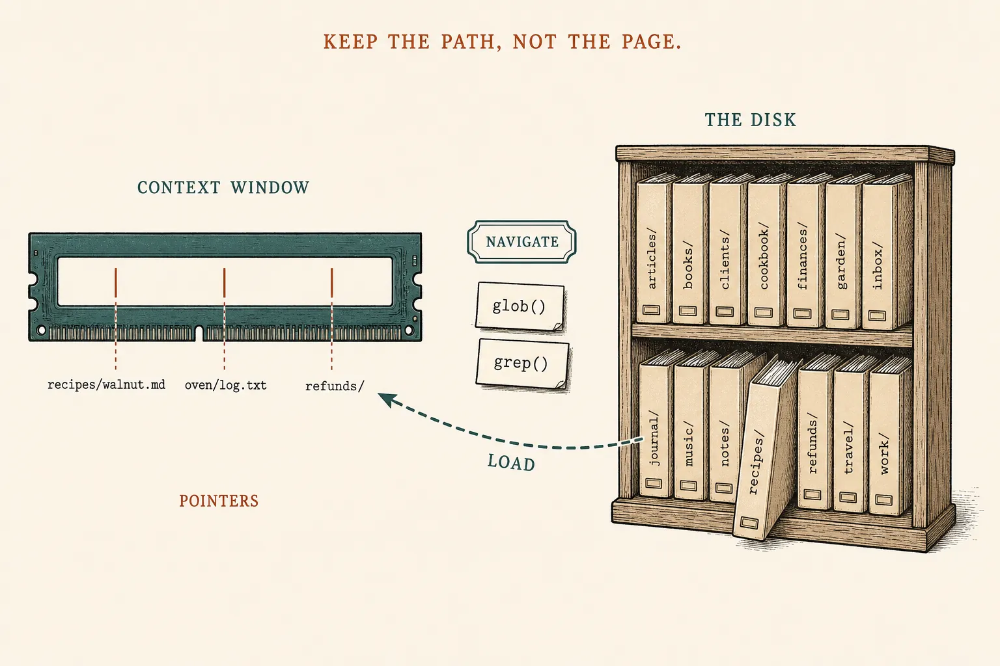
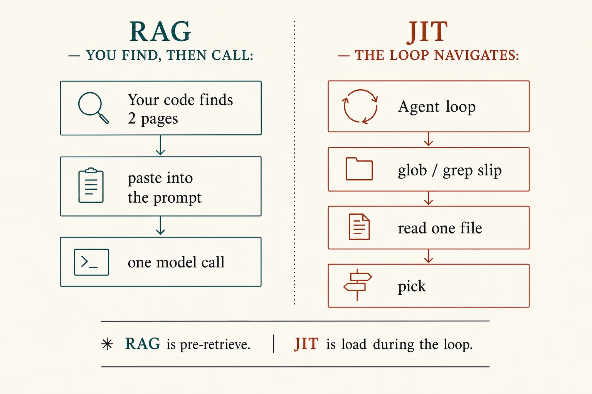
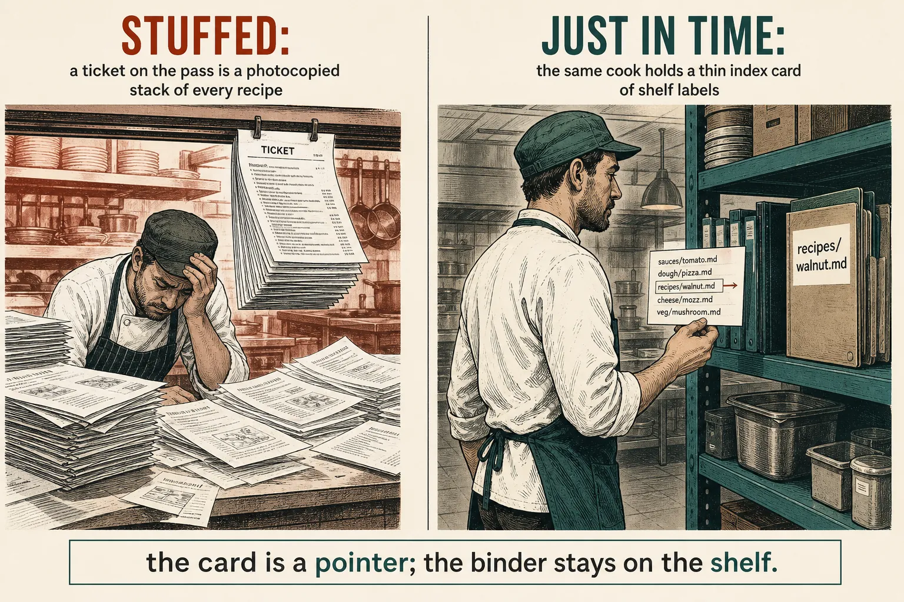

Context engineering
Keep the path, not the page
Lesson 0009 cleans a window that is already full. Just-in-time is how you avoid filling it: hold a cheap pointer, navigate, and load one page this turn — the rest of the kitchen stays on disk.
What this is. Anthropic’s just-in-time context: lightweight identifiers (paths, queries, links) plus tools that pull a page at runtime. Claude Code’s glob / grep / read is the working example. Effective context engineering · “Context retrieval and agentic search”
What this is not. RAG (you find, then one call — lesson 0004). A skill (a chapter you wrote — lesson 0008). Sub-agents (a helper with a clean window — next). Not a bigger disk, and not dumping the repo into RAM.
- 1 · PointerA path, query, or URL. Cheap. The page stays on disk.
- 2 · NavigateGlob is names. Grep is lines inside. Folder names are already signal.
- 3 · LoadRead (or head/tail) this turn. Still propose · run · paste.
Same window as 0002. Same slips as 0005. The new move is what you hold before the slip.

The shelf is disk. The ticks in the bar are pointers. Only one page pays rent this turn.
You already met the cousins
RAG: your code finds a few pages and pastes them, then one call. A skill: you wrote a how-to folder; the catalog line is always in RAM; the chapter loads on a match. JIT: the kitchen already exists — a codebase, a drive, a database — and the agent walks it. Same essay: CLAUDE.md may drop in up front; glob and grep fetch the rest just-in-time.

Architecture first. RAG is pre-retrieve. JIT is load during the loop.
One ticket · walnut crumb
# STUFFED — disk copied into RAM
Read every file under kitchen/ # refunds, logs, dough…
# RAG — you already knew the two pages
paste(walnut.md, allergens.md)
ask("how do we make walnut crumb?")
# JIT — pointers in RAM, then slips
Glob("recipes/**")
# → recipes/walnut.md
# recipes/margherita.md # not loaded
Grep("walnut crumb", path="recipes/")
Read("recipes/walnut.md") # this turn only
# oven/log.txt never entered RAM
What this shows. recipes/walnut.md as a string is a pointer — tokens for a path, not a page. The folder name is already a vote: not refunds/. Grep returns matching lines. Read pastes one file. Claude Code’s Read will page a huge file (offset / limit) instead of swallowing it. Claude Code · tools

Kitchen only to make the pointer concrete. The load-bearing picture is the bar and the two columns.
Glob is names. Grep is guts.
Claude Code: Glob finds files by pattern (recipes/**). Grep searches contents (built on ripgrep). Read takes a path and returns lines — and tells the model to page if the file is too big. You do not need those product names at work. You need the three rents: pointer, navigate, load. Cursor’s agent loop is the same shape. Same tools page · How Claude Code works
Skill: watch the same ticket shrink
Stuffed copies the shelf. RAG is you pasting two pages before the call. Pointers hold names. Navigate greps. Load reads one file.
Same ticket, five windows
Hybrid is allowed
Anthropic: Claude Code drops CLAUDE.md in up front (a cheap always-on note) and uses glob/grep for the rest. That is not stuffing the repo. Runtime exploration is slower than a pre-built index — use RAG when you already know the two pages; use JIT when the agent must discover them. “Do the simplest thing that works.” Same essay
RAG
You find, you paste, then one call. Fast when the index is right. Lesson 0004.
Skill
You wrote the chapter. Catalog always; body on a match. Lesson 0008.
JIT
The files already exist. The loop writes glob / grep / read. Tonight.
Parked: sub-agents — a helper gets a clean window and returns a short summary, so the search dumps never hit your RAM. That is the other half of map item 10, not tonight. Prompt caching is still a cost trick, not a pointer.
Check
Primary source. The just-in-time section (identifiers, head/tail, hybrid with CLAUDE.md) in Effective context engineering for AI agents. Then the three tools: Glob, Grep, Read. The loop around them: How Claude Code works.
Card: just-in-time. Last levers: evict · compact · note. Last lookup: RAG.